Regression¶
概述¶
机器学习就是让机器具备找一个函式的能力。
函式的不同类型
- Regression：输出的类型是scalar数值
- Classification：输出的是某个选项，从多个选项中选出一个（例如alpha go下棋）
- Structured Learning：输出一个有结构的东西，比如文章
寻找函式的过程¶
例子：寻找一个函数，输入是youtube上面，到目前为止每一天的点赞人数、订阅人数、观看次数等信息，输出是隔天这个频道会有的总观看次数。
1. Function with Unknown Parameters¶
第一个步骤是我们要 写出一个带有未知参数的函式 ，简单来说就是我们先猜测一下我们打算找的这个函式\(F\)，的数学式到底长什么样子。 $$ y=b+w*x_{1} $$
- \(y\)是我们准备要预测的东西，我们准备要预测的是今天，2月26号这个频道总共观看的人；
- \(x_{1}\)是这个频道前一天总共观看的人数，\(y\)跟\(xₗ\)都是数值；
- b跟w是未知的参数，它是准备要通过资料去找出来的，我们还不知道w跟b应该是多少，我们只是隐约地猜测
这个猜测往往就来自对这个问题本质上的了解，也就是Domain knowledge，其实就是你对手头这个问题的理解，利用一切可用的信息，从各种角度各种先验知识去建一个最适合当前问题的model。
2. Define Loss from Training Data¶
第二个步骤，我们要定义一个东西叫做Loss，Loss也是一个Function，这个Function的输入，是我们Model里面的参数，我们的Model叫做\(y=b+w*xₗ\)，而\(b\)跟\(w\)是未知的，是我们准备要找出来的，所谓的Loss函数的输入就是\(b\)跟\(w\)，也就是model里面的Parameter，这个Function输出的值代表我们把这一组未知的参数设定为某一个数值的时候，model预测的数值好还是不好。
用1.1的预测1.2的，然后将真的1.2（真实的值称为 label）和预测的1.2做一个比较，得到下面的\(e_{1}\)，然后用1.2的预测1.3的得到\(e_{2}\)，以此类推一直算到\(e_{N}\)，最后求平均得到Loss。
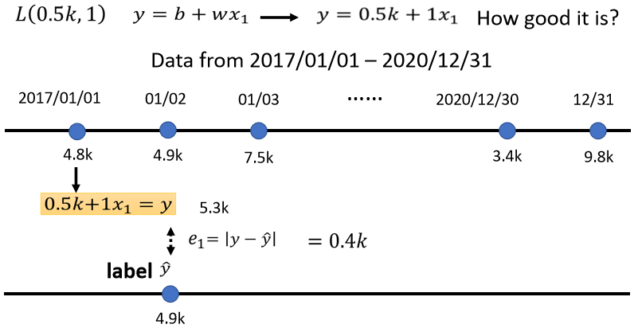
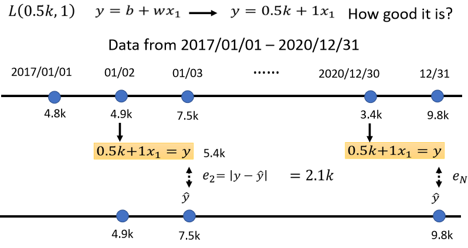
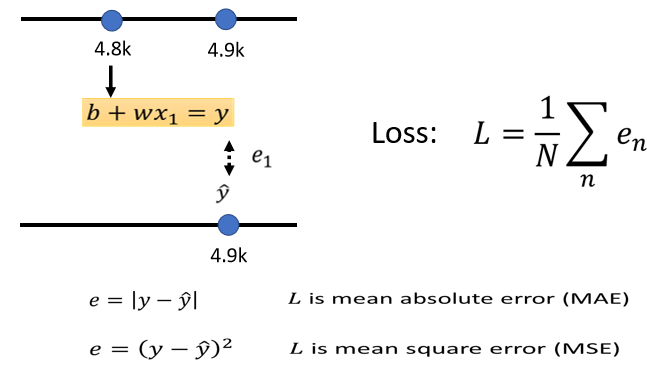
大L越大，代表这一组参数越不好；大L越小，代表这一组参数越好。
估测的值跟实际的值之间的差距有不同的计算方法，在刚才的例子里面，我们是算y跟ŷ之间绝对值的差距，这一种计算差距的方法得到大L叫 mean absolute error，MAE。如果e是用，相减y平方算出来的，这个叫mean square error，MSE。有一些任务，如果y和ŷ都是概率分布的话，可能会选择Cross-entropy。
Error Surface
我们可以调整不同的w和不同的b，然后为不同的w跟b的组合，都去计算它的Loss，然后就可以画出以下这一个等高线图。在这个等高线图上面，越偏红色系，代表计算出来的Loss越大，就代表这一组w跟b越差；如果越偏蓝色系，就代表Loss越小，就代表这一组w跟b越好。
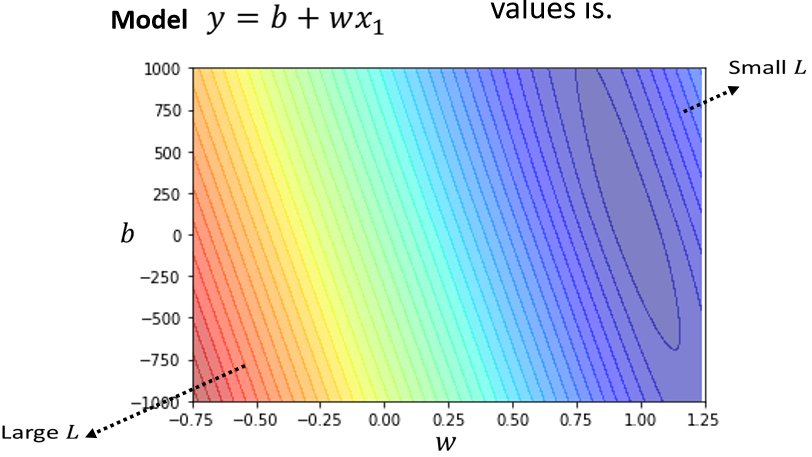
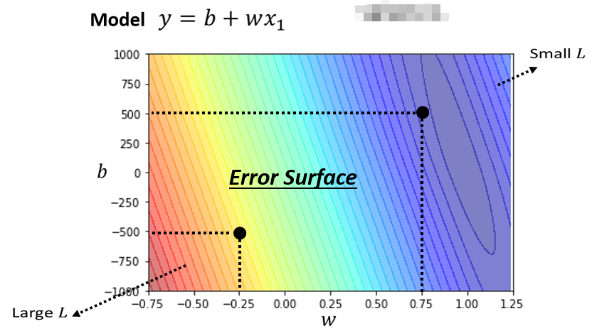
3. Optimization¶
第三步所要做的事情其实是 解一个最佳化的问题，找一个w跟b使我们的Loss的值最小。
在这一门课里面，我们唯一会用到的Optimization的方法叫做 Gradient Descent 。为了简化问题，先假设未知的参数只有一个，就是\(w\)，没有参数b。那当我们w代不同的数值的时候，我们就会得到不同的Loss，这一条曲线就是error surface，只是刚才在前一个例子里面，我们看到的error surface，是二维的。这边只有一个参数，所以我们看到的这个error surface是一维的.
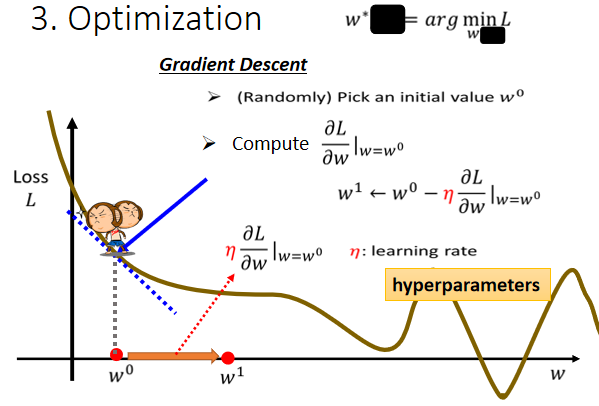
3.1 那么如何找一个w，使得Loss的值最小呢？¶
-
首先，要随机选取一个初始的点\(w_{0}\)，这个初始的点往往真的就是随机的。另外，也许有一些方法，可以给我们一个比较好的\(w_{0}\)的值。
-
接下来计算w等于\(w_{0}\)的时候，w这个参数对Loss的微分是多少 $$ ∂L/∂w |(w=w^0) $$
- 如果左边比较高右边比较低的话，就把w的值变大，从而让loss变小。那一步要跨多大呢，这一步的步伐的大小取决于两件事情。
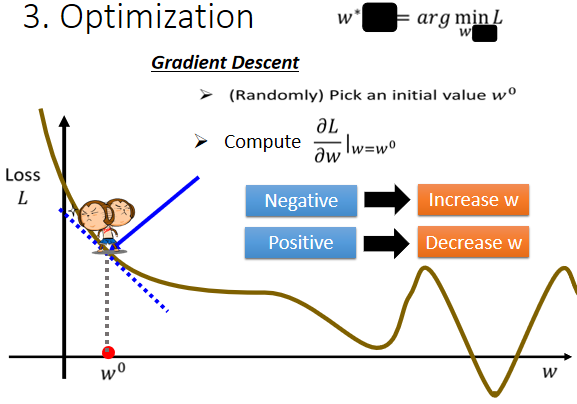
- 第一件事情是这个地方的斜率有多大，这个地方的斜率大，这个步伐就跨大一点，斜率小步伐就跨小一点；
- 除了斜率以外，参数\(η\)叫做 learning rate ，学习速率。 它是自己设定的 ，如果\(η\)设大一点，那你每次参数update就会量大，学习可能就比较快；如果η设小一点，那参数的update就很慢，每次只会改变一点点参数的数值。这种做机器学习 需要自己设定的东西，叫做超参数hyperparameters 。
3.2 什么时候会停下来呢？往往有两种状况¶
- 第一种状况是一开始会设定最多计算几次，比如设定上限就是100万次，那么参数更新100万次以后，就会停止。
- 还有另外一种理想上的停下来的可能是，当我们不断调整参数，调整到一个地方的微分的值正好是0的时候，0乘上learning rate η还是0，所以参数不会再移动位置。我们把\(w^{0}\)更新到\(w^{1}\)，再更新到\(w^{2}\)，最后更新到\(w^{t}\)，那参数的位置就不会再更新。
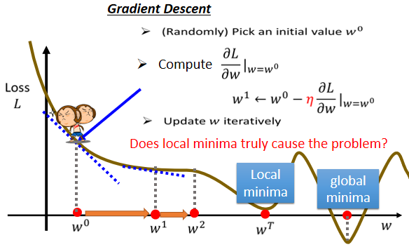
但是很容易发现，Gradient Descent 这个方法，有一个巨大的问题，我们没有找到全局最优解。那右侧红点这一个位置，这个真的可以让loss最小的地方，叫做 global minima ，而\(W^{T}\)这个地方叫做 local minima ，它的左右两边，都比这个地方的loss还要高一点，但是它不是整个error surface上面的最低点。但其实Gradient Descent方法的问题不在于local minima。
3.3 多参数情况¶
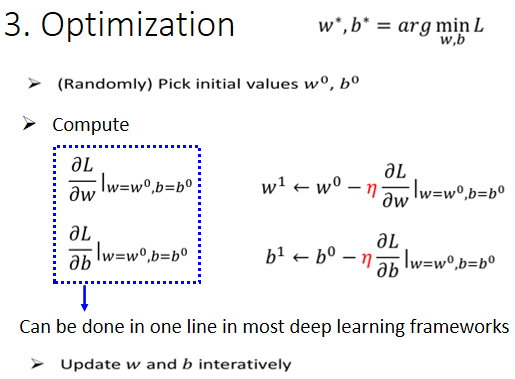
刚才的例子，是只有一个参数的例子。但实际上刚才的模型有两个参数，\(w\)和\(b\)。在有两个参数的情况下，如何使用Gradient Descent呢？其实跟一个参数并没有什么不同。
-
我们现在有两个参数，都给它随机的初始值，\(w⁰\)跟\(b⁰\)；
-
要计算\(w\)对Loss的微分和\(b\)对Loss的微分；
- 更新\(w\)和\(b\)，把\(w⁰\)减掉learning rate乘上微分的结果得到\(w¹\)，把\(b⁰\)减掉learning rate乘上微分的结果得到\(b¹\)；
- 反复同样的步骤，就不断地更新\(w\)和\(b\)，期待最后可以找到一个最好的\(w\)，\(w^*\) 和最好的\(b\) ，\(b^*\)；
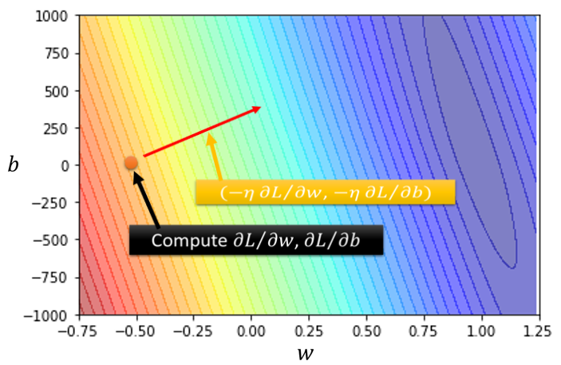
- 在图上的表示，更新的方向就是\(w\)对Loss的微分乘以η再乘以一个负号，算出这个微分的值，就可以决定更新的方向，你就可以决定w要怎么更新。把w和b更新的方向结合起来，就是一个向量，就是这个红色的箭头，我们就从如下图第二个点的位置移到了第三个点的位置；
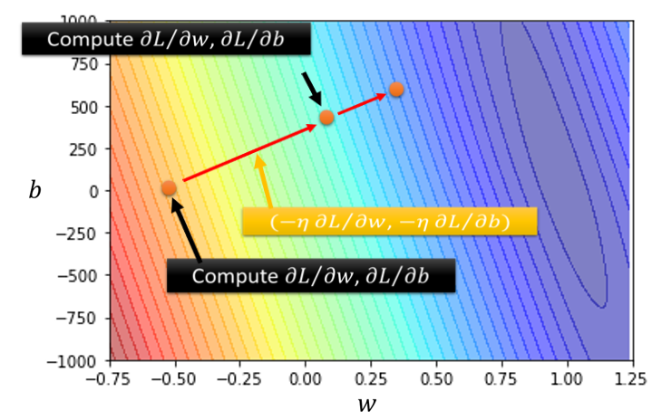
- 然后再计算一次微分，再决定要走什么样的方向，把这个微分的值乘上learning rate再乘上负号，就知道红色的箭头要指向哪里，就知道怎么移动\(w\)和\(b\)的位置，一直移动，期待最后可以找出一组不错的\(w\)和\(b\)；
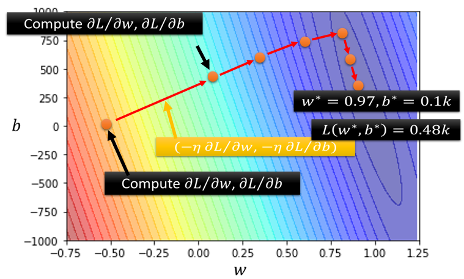
- 实际上使用Gradient Descent，真正的数据计算出来的最好的\(w\)是0.97，最好的\(b\)是0.1k，跟猜测较为接近。
Linear Model¶
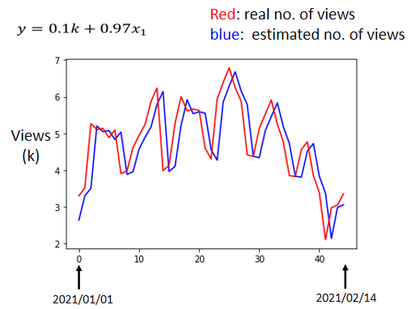
分析一下结果
- 横轴是代表的是时间，0这个最左边的点，代表的是2021年1月1号；最右边点，代表的是2021年2月14号。
- 纵轴是观看的人次，以千人为单位。
- 红色的线是真实的观看人次。
- 蓝色的线是机器用这一个函式预测出来的观看人次。
明显，蓝色的线几乎是红色的线往右平移一天，这是合理的，因为我们觉得，x₁也就是前一天的观看人次，前一天观看人次x₁乘以0.97加上0.1k就是隔天的观看人次。所以机器几乎就是拿前一天的观看人次来预测隔天的观看人次。仔细观察可以发现，这个真实的曲线是以七天为周期的。所以既然我们已经知道每隔七天就是一个循环，那这一个线性model就有局限性，因为它只能够看前一天。
每隔七天一个循环，如果我们构建一个模型，它是参考前七天的资料，把七天前的资料，直接复制拿来当作预测的结果，也许预测的会更准确。所以我们需要修改我们的模型，通常一个模型的修改，往往来自你对这个问题的理解，也就是Domain Knowledge。
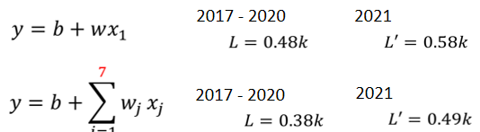
所以一开始，我们对问题完全不理解的时候，我们就胡乱写一个 $$ y=b+wx_1 $$ 并没有做得特别好，接下来我们观察了真实的数据以后，得到一个结论是，每隔七天有一个循环，所以我们应该要把前七天的观看人次都列入考虑，所以我们写了一个新的模型
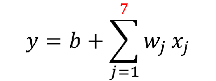
xⱼ，下标j代表是几天前，然后这个j等于1到7，也就是从一天前两天前，一直考虑到七天前。七天前的资料，乘上不同的weight，也就是wⱼ，加起来，再加上bias，就得到了预测的结果。
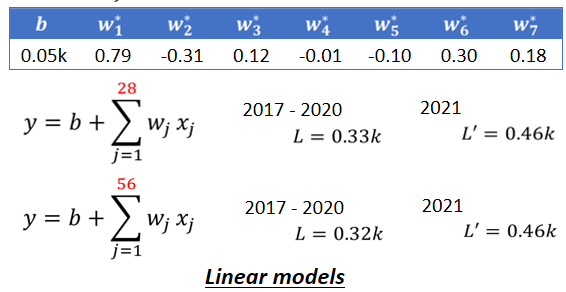
这些模型，它们都是把输入的x，x叫做feature，把feature乘上weight，再加上bias就得到预测的结果，这样的模型叫 Linear model 。
Piecewise Linear Curves¶
如果实际上的关系是如红线所示，那么线性模型永远无法表示出来。因此 Linear 的 Model 有很大的限制，这一种来自于 Model 的限制，叫做 Model 的 Bias ，意思是没有办法模拟真实的状况。
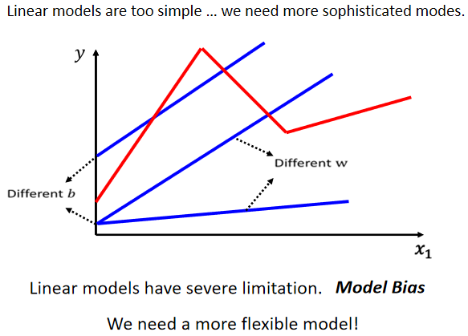
所以我们需要写一个更复杂的，更有弹性的，有更多未知参数的 Function，我们可以观察如下红色的曲线，它可以看作是一个常数，再加上一群蓝色的 Function
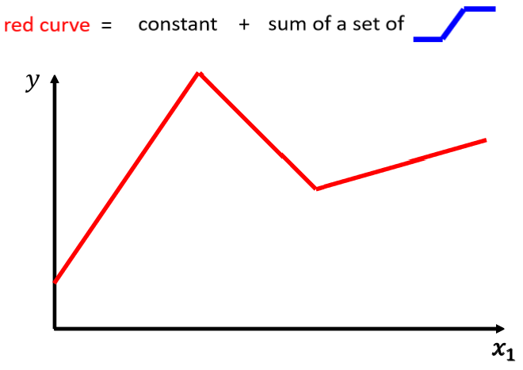
这个蓝色的 Function，它的特性是
- 当输入的值，小于某一个 Flash Hold 的时候，它是某一个定值；大于另外一个 Flash Hold 的时候，又是另外一个定值；
- 中间有一个斜坡；
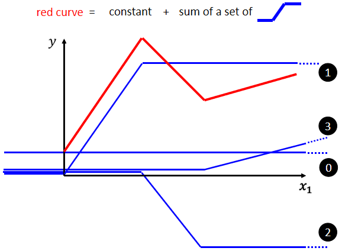
Curves 是由很多线段所组成的，叫做 Piecewise Linear 的 Curves，这些 Piecewise Linear 的 Curves，都有办法用常数项，加一大堆的蓝色 Function 组合出来。如果 Piecewise Linear 的 Curves 越复杂，也就是转折的点越多，那么需要的蓝色的 Function 就越多。
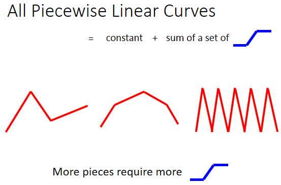
可以用 Piecewise Linear 的 Curves，去逼近任何的连续的曲线，而每一个 Piecewise Linear 的 Curves，又都可以用一大堆蓝色的 Function 组合起来，也就是说，我们只要有足够的蓝色 Function 相加，就可以变成任何连续的曲线。
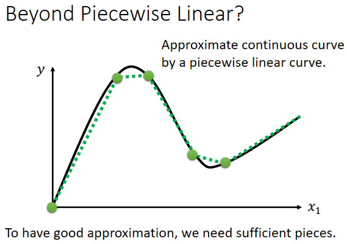
接下来使用某个函数来表示这个蓝色函数。
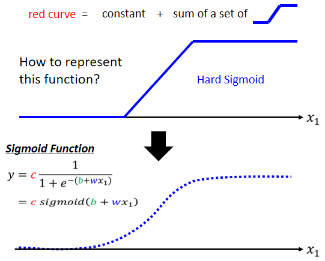
用 Sigmoid 来逼近这一个蓝色的 Function， $$ y=c \frac{1}{1+e^{-(b+wx_1)}} $$ 因此我们可以直接写成如下形式 $$ y=c*sigmoid(b+wx_1 ) $$ 这个合适的蓝色的 Function 怎么制造出来呢？
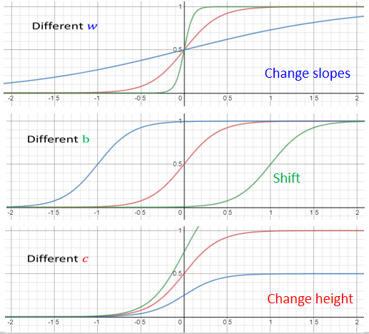
$$ y=c \frac{1}{1+e^{-(b+wx_1)}} $$ 我们需要调整这里的 b 和 w 和 c，- \(w\) 改变斜率从而改变斜坡的坡度
- $b $ 改变sigmoid的左右偏移
- \(c\) 改变高度
所以只要有不同的 w 、不同的 b 、不同的 c，就可以制造出不同的 Sigmoid Function ，把不同的 Sigmoid Function 叠加起来，就可以逼近不同的 Piecewise Linear 的 Function，然后 Piecewise Linear 的 Function 可以拿来近似各种不同的 Continuous 的 Function
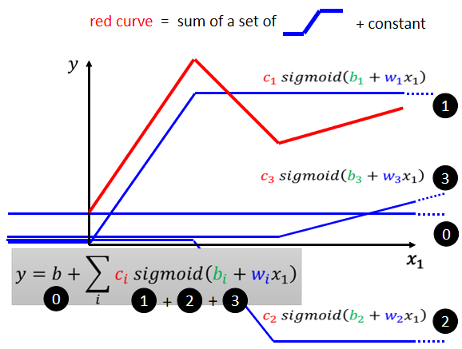
如上公式所示，不同的sigmoid表示一个蓝色的 Function，叠加起来再加上常数就能得到不同的 Piecewise Linear 的 Curves。如下所示，\(y=b+wx_1\)是线性的，所以有 Model Bias，我们写了一个更有弹性的，有未知参数的 Function \(y=b + \sum_i {c_isigmoid(b_i+w_ix_1 )}\) 本来是 \(b+wx_1\)，变成了\(b_i+w_ix_1\)，由此能够拟合更为复杂的图形。
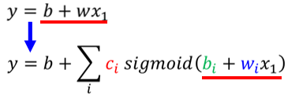
刚才其实只用一个 Feature，现在用 j 来代表 Feature 的编号。比如，刚才如果要考虑前 28 天的话，j 就是 1 到 28，考虑前 56 天的话，j 就是 1 到 56。本来是
$$ y=b + \sum_j {w_ix_j } $$ 改成了 $$ y = b + \sum_i {c_isigmoid(b_i+\sum_j w_i{_j} x_j )} $$
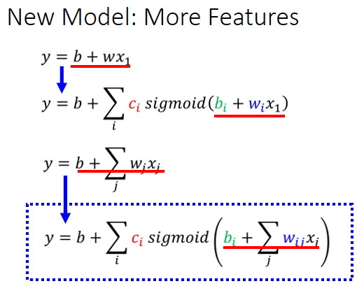
我们先考虑一下 j 就是 1 2 3 的状况，也就是只考虑三个 Feature
也就是说，我们只考虑前一天、前两天、和前三天的 Case，
- 所以 j 等于 1 2 3，所以输入就是 \(x_1\) 代表前一天的观看人数，\(x_2\)两天前观看人数，\(x_3\)三天前的观看人数
- 每一个 i 就代表了一个蓝色的 Function，只是我们现在每一个蓝色的 Function，都用一个 Sigmoid Function 来近似它
那这边呢，这个 1 2 3 就代表我们有三个 Sigmoid Function，那我们先来看一下，这个括号里面做的事情是什么
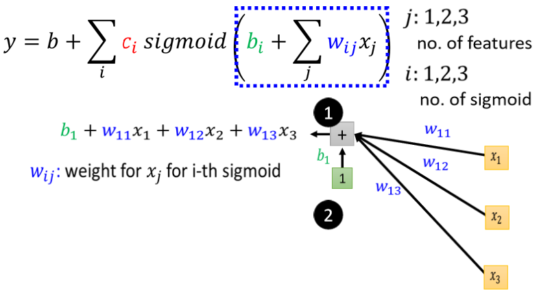
每一个 Sigmoid 都有一个括号，第一个 Sigmoid i 等于 1 的 Case ，就是把
- x1 乘上一个 Weight 叫 \(w_{11}\)
- x2 乘上另外一个 Weight 叫 \(w_{12}\)
- x3 再乘上一个 Weight 叫 \(w_{13}\)
- 全部把它加起来，再加一个 b
我们用 \(w_{ij}\) ，来代表在第 i 个 Sigmoid 里面，乘给第 j 个 Feature 的 Weight
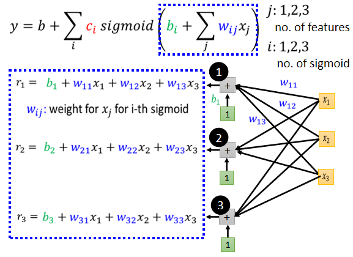
为了简化，我们把括弧里面的数字，用一个比较简单的符号r来表示，
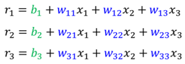
这个 x1 x2 x3 和 r1 r2 r3，中间的关系可以使用矩阵来表示
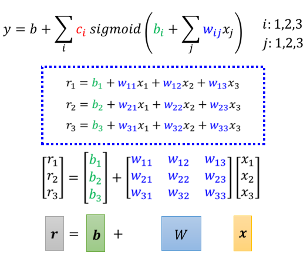
那把它改成线性代数比较常用的表示方式，x 乘上矩阵 w 再加上向量 b，会得到一个向量叫做 r
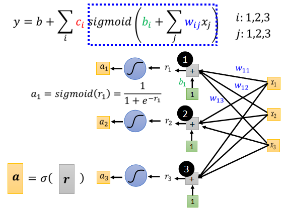
所以这边这个蓝色的虚线框框里面做的事情，就是从 x1 x2 x3 得到了 a1 a2 a3，
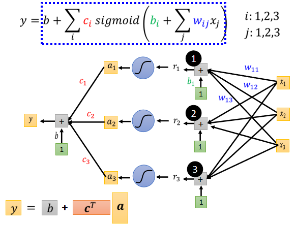
接下来 Sigmoid 的输出，还要乘上 ci 然后还要再加上 b，我们可以把这个 c 矩阵叫作 Transpose，
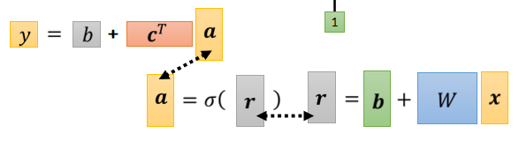
整体而言做的事情就是输入 x，Feature 就是 x 这个向量，x 乘上矩阵 w 加上向量 b 得到向量 r，再把向量 r 透过 Sigmoid Function得 到向量 a，再把向量 a 跟乘上 c 的 Transpose 加上 b 就得到 y。
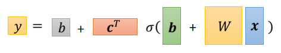
x 乘上 w 再加上 b 通过 Sigmoid Function，乘上 c 的 Transpose 加 b 就得到 y。接下来，在怎么把这些未知的参数找出来之前，我们先再稍微重新定义一下我们的符号，
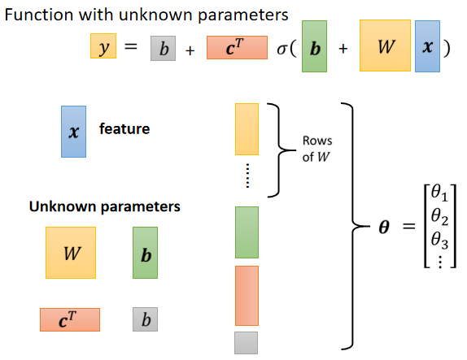
x 是 Feature ，对于 \(W\) \(b\) \(c\) 跟 \(b\)，绿色的 \(b\) 是一个向量，灰色这个是一个数值
我们把黄色的 w、两个b、c，集合在下面，它们就是我们的未知参数。我们把这些东西通通拉直，拼成一个很长的向量，我们把 w 的每一个 Row，或者是每一个 Column 拿出来，今天不管是拿 Row 或者拿 Column 都可以，把 w 的每一个 Column 或每一个 Row 拿出来，拼成一个长的向量，这个长的向量，我们直接用一个符号叫做 \(θ\) 来表示它。
\(θ\) 是一个很长的向量，里面的第一个数值我们叫 \(θ_1\)，第二个叫 \(θ_2\)。那 \(θ\) 里面，这个向量里面有一些数值是来自于这个矩阵\(W\)，有些数值是来自于 \(b\)，有些数值来自于 \(c\)，有些数值来自于另一个 \(b\)，反正\(θ\) 统称我们所有的未知参数。
Back to ML_Step 2 :define loss from training data¶
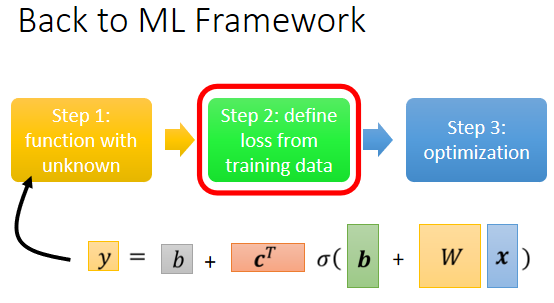
接下来进入第二步，我们直接用 θ 来统设所有的参数，所以我们现在的 Loss Function 就变成 \(L( θ )\)
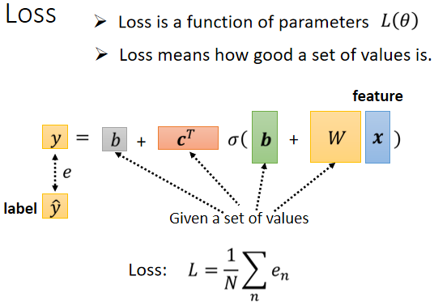
这个 Loss Function 要问的就是， θ 是某一组数值的情况下，结果会有多不好或者有多好，计算的方法跟刚才只有两个参数的时候一模一样
- 先给定某一组 \(W\) \(b\) \(c^T\) 跟 \(b\) 的值，也就是先给定某一组 \(θ\) 的值
- 然后把一种 Feature x 带进去，然后看看估测出来的 y 是多少
- 再计算一下跟真实的 Label 之间的差距，得到一个 e
- 把所有的误差通通加起来求平均，就得到了 Loss
Back to ML_Step 3: Optimization¶
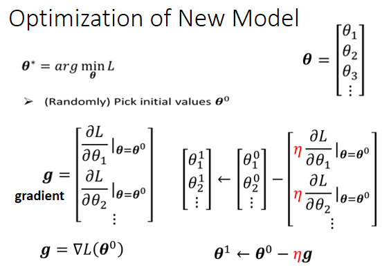
θ 是一个很长的向量，我们把它表示成 \(θ_1\) \(θ_2\) \(θ_3\) 等，现在就是要 找一组 θ，这个 θ 可以让 Loss 越小越好 。可以让 Loss 最小的那一组 θ， 我们叫做 \(θ^*\)。
- 一开始要随机选一个初始的数值，叫做 \(θ_0\) 。可以随机选，之后会对如何找 \(θ_0\) 进行方法的优化；
- 接下来要计算微分，对每一个未知参数，这边用 \(θ_1\) \(θ_2\) \(θ_3\) 来表示。要为每一个未知的参数，都去计算它对 L 的微分，把每一个参数都拿去计算对 L 的微分以后，集合起来就是一个向量，用 g 来表示，这个向量叫做 Gradient，Gradient 的表示方法是在 L 前面放一个倒三角形。L 前面放一个倒三角形的意思就是，把所有的参数 \(θ_1\) \(θ_2\) \(θ_3\)，通通拿去对 L 作微分。
- 算出这个 g 以后，接下来 Update 参数。本来有一个参数叫 \(θ_1\)，上标 0 代表它是一个起始的值，它是一个随机选的起始的值，把这个 \(θ_1^0\) 减掉 η 乘上微分的值，得到 \(θ_1^1\)，代表 \(θ_1\) 更新过一次的结果，\(θ_2^0\) 减掉 η 乘上微分的值，得到\(θ_2^1\)，以此类推。
简写把这边所有的 θ 合起来当做一个向量，我们用 $θ^0 $来表示，把 η 提出来，那剩下每一个参数对 L 微分的部分，叫做 Gradient 也就是 g，所以 \(θ^0\) 减掉 η 乘上 g，就得到 \(θ^1\) $$ θ^1 ← θ^0-ηg $$
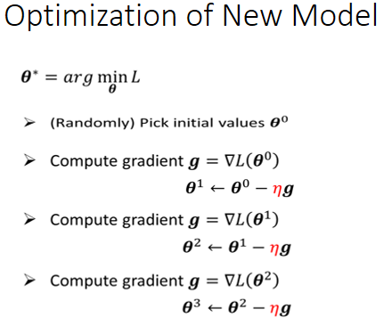
整个操作就是这样，由 \(θ^0\) 算 Gradient，根据 Gradient 去把 \(θ^0\) 更新成 \(θ^1\)，然后再算一次 Gradient，根据 Gradient 把 \(θ^1\) 再更新成 \(θ^2\)，再算一次 Gradient 把 \(θ^2\) 更新成 \(θ^3\)，以此类推直到不想做，或者是你算出来的 Gradient是零向量，导致没有办法再更新参数为止，不过在实作上几乎不太可能作出 Gradient 是零向量的结果。
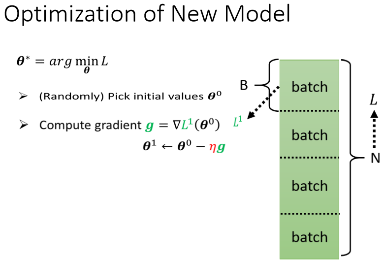
但是实作上，这边是一个实作的 Detail 的 Issue，实际上我们在做 Gradient的时候，我们会这么做。
我们这边有 N 笔资料，我们会把这 N 笔资料分成一个一个的 Batch，就是一包一包的东西，随机分就好。所以每个 Batch 里面有 B 笔资料，所以本来全部有 N 笔资料，现 B 笔资料一组，一组叫做 Batch。
本来我们是把所有的 Data 拿出来算一个 Loss，现在只拿一个 Batch 里面的 Data 出来算一个 Loss，我们这边把它叫 \(L^1\)。
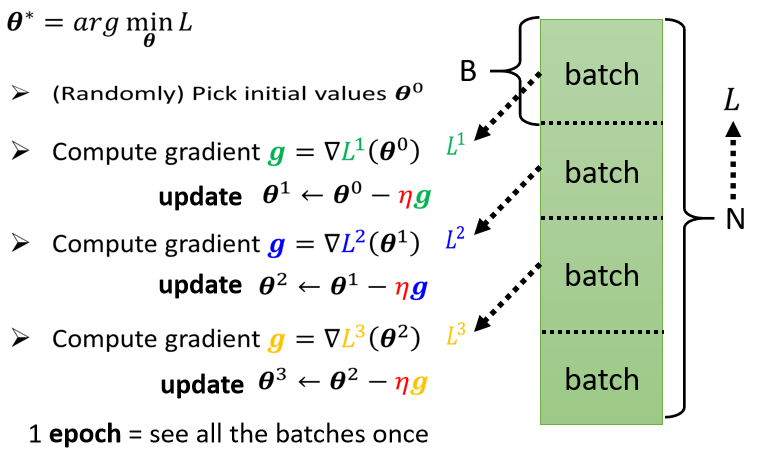
但是你可以想象假设这个 B 够大，也许 \(L\) 跟 \(L^1\) 会很接近，所以实作上，每次我们会先选一个 Batch，用这个 Batch 来算 \(L\)，根据这个 \(L^1\) 来算 Gradient，用这个 Gradient 来更新参数，接下来再选下一个 Batch 算出 \(L^2\)，根据 \(L^2\) 算出 Gradient，然后再更新参数，再取下一个 Batch 算出 \(L^3\)，根据 \(L^3\) 算出 Gradient，再用 \(L^3\) 算出来的 Gradient 来更新参数。
所以我们并不是拿 \(L\) 来算 Gradient的，实际上是拿一个 Batch 算出来的 \(L^1\) \(L^2\) \(L^3\)，来计算 Gradient，把所有的 Batch 都看过一次叫做一个 Epoch ，每一次更新参数叫做 一次 Update 。
其实 Batch Size 的大小也是自己决定的，所以又多了一个 HyperParameter。所以做一个 Epoch 的训练，你其实不知道它更新了几次参数，有可能 1000 次，也有可能 10 次，取决于它的 Batch Size 有多大。
模型变型¶
其实还可以对模型做更多的变形。确实可以不一定要换成 Soft 的 Sigmoid，有其他的做法，举例来说这个 Hard 的 Sigmoid，它可以看作是两个 Rectified Linear Unit 的相加
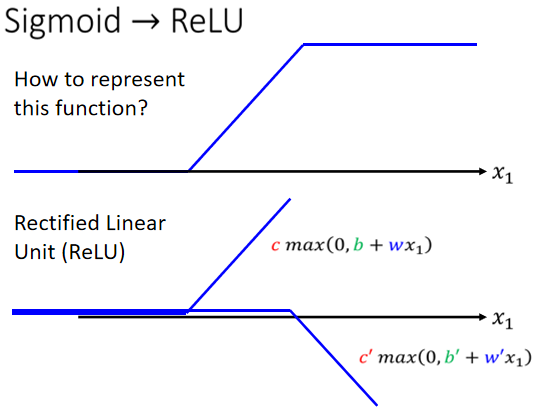
它有一个水平的线，走到某个地方有一个转折的点，然后变成一个斜坡，那这种 Function 它的式子，写成 $$ c max(0, b + wx_1) $$ 每条不同的 w 不同的 b 不同的 c，就可以挪动它的位置，这种线在机器学习里面叫做 Rectified Linear Unit*，缩写叫 ReLU。
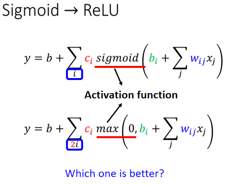
把两个 ReLU 叠起来，就可以变成 Hard 的 Sigmoid，本来只有 i 个 Sigmoid，而需要 2 个 ReLU，才能够合成一个 Hard Sigmoid ，所以要 2 倍的 ReLU。所以表示那个蓝色的 Function 不是只有一种做法。这个 Sigmoid 或是 ReLU，他们在机器学习里面，我们就叫它 Activation Function。
当然还有其他常见的 Activation Function，但 Sigmoid 跟 ReLU，是今天最常见的 Activation Function 之一，那哪一种比较好呢， ReLU 比较好。
接下来做的实验都是真实的数据。
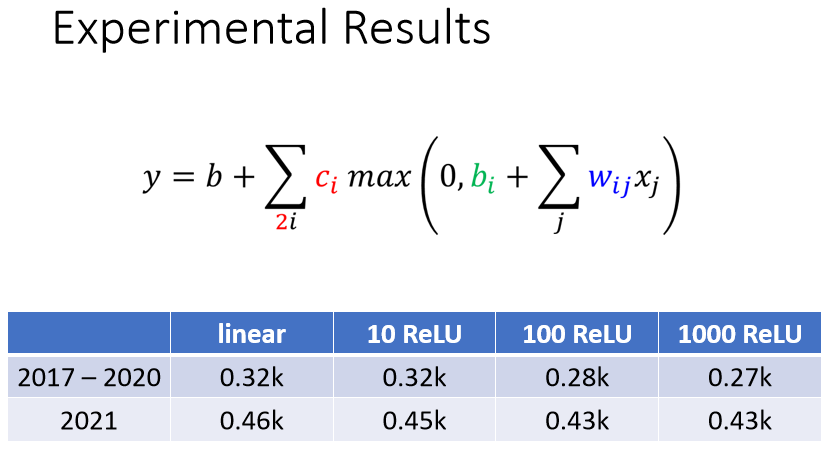
- 如果是 Linear 的 Model，我们现在考虑 56 天，训练资料上面的 Loss 是 0.32k，没看过的资料 2021 年资料是 0.46k；
- 如果用 10 个 ReLU，好像没有进步太多，这边跟用 Linear 是差不多的，所以看起来 10 个 ReLU 不太够；
- 100 个 ReLU 就有显著的差别了，100 个 ReLU 在训练资料上的 Loss，就可以从 0.32k 降到 0.28k，有 100 个 ReLU，我们就可以制造比较复杂的曲线，本来 Linear 就是一直线，但是 100 个 ReLU 我们就可以产生 100 个，有 100 个折线的Function，在测试资料上也好了一些；
- 接下来换 1000 个 ReLU，1000 个 ReLU，在训练资料上 Loss 更低了一些，但是在没看过的资料上，看起来也没有太大的进步。
多做几次¶
接下来我们还可以继续改模型
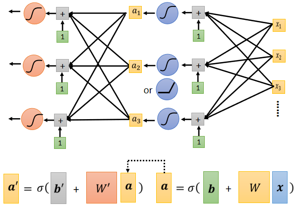
举例来说，刚才我们说从 x 到 a 做的事情，是把 x 乘上 w 加 b，再通过 Sigmoid Function，不过我们现在已经知道说，不一定要通过 Sigmoid Function，通过 ReLU 也可以，然后得到 a。
我们可以把这个同样的事情，再反复地多做几次，刚才我们把 w x 乘上 w 加 b，通过 Sigmoid Function 得到 a，我们可以把 a 再乘上另外一个 w’，再加上另外一个 b’，再通过 Sigmoid Function，或 RuLU Function，得到 a’。
所以我们可以把 x，做这一连串的运算产生 a，接下来把 a 做这一连串的运算产生 a’，那我们可以反复地多做几次，要做几次，这个又是另外一个 Hyper Parameter。这边的 w 跟 w’ 不是同一个参数，b 跟 b’，也不是同一个参数，是增加了更多的未知参数。
每次都加 100 个 ReLU，Imput Features就是 56 天前的资料。
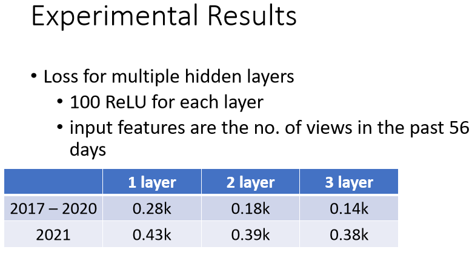
- 如果是只做一次，就乘上 w 再加 b，再通过 ReLU 或 Sigmoid，这件事只做一次的话，这是我们刚才看到的结果。
- 两次，Loss 降低很多，0.28k 降到 0.18k，没看过的资料上也好了一些。
- 三层，又有进步，从 0.18k 降到 0.14k，在没看过的资料上，从 0.43k 降到了 0.38k，看起来也是有一点进步的。
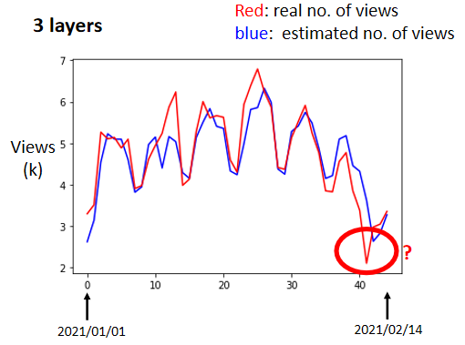
横轴就是时间，纵轴是观看的人次，红色的线代表的是真实的数据，蓝色的线是预测出来的数据。
会发现，红色的数据每隔一段时间就会有两天的低点，在低点的地方，机器的预测还算是蛮准确的。这边有一个神奇的事情，这个机器高估了真实的观看人次，尤其是在红圆圈圈出来这一天，这一天有一个很明显的低谷，但是机器没有预测到这一天有明显的低谷，它是晚一天才预测出低谷。这天最低点就是除夕，除夕根本不会有人学习，所以这其实并不能怪机器学习。
好名字¶
到目前为止，我们讲了很多各式各样的模型，我们现在还缺一个好名字，这些 Sigmoid 或 ReLU 叫做 Neuron，我们这边有很多的 Neuron，很多的 Neuron 就叫做 Neural Network，Neuron 就是神经元。
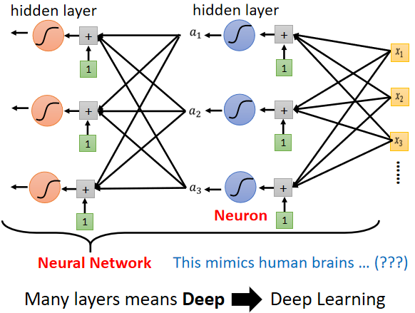
这边有很多的 Neuron，每一排 Neuron 我们就叫它一个 Layer，它们叫 Hidden Layer，有很多的 Hidden Layer 就叫做 Deep，这整套技术就叫做 Deep Learning。
Deep¶
所以人们就开始把类神经网络越叠越深，12 年的时候有一个 AlexNet，它有 8 层，错误率是 16.4%，两年之后 VGG 19层，错误率在影像辨识上进步到 7.3 %，后来 GoogleNet 把错误率降到 6.7%，有 22 层，但这些都不算什么
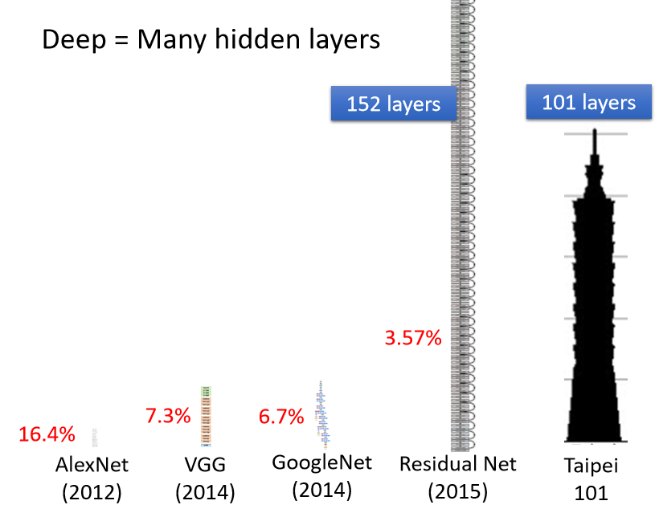
Residual Net 有 152 层，要训练这么深的 Network 是有诀窍的，这个之后再讲。
如果你仔细思考一下，我们一路的讲法的话，你有没有发现一个奇妙的违和的地方，我们一开始说，我们想要用 ReLU 或者是 Sigmoid，去逼近一个复杂的 Function，实际上只要够多的 ReLU 够多的 Sigmoid，就可以逼近任何的连续的 Function。所以我们只要一排 ReLU 一排 Sigmoid，够多就足够了，那深的意义到底何在呢。
把 ReLU Sigmoid Function 反复用，到底有什么好处呢，为什么不把它们直接排一排呢，直接排一排也可以表示任何 Function ，那到底 Deep 的理由，为什么我们不把 Network 变胖，只把 Network 变深呢，这个是我们日后要再讲的话题。
那有人就说，那怎么不变得更深呢，刚才只做到 3 层，应该要做得更深，
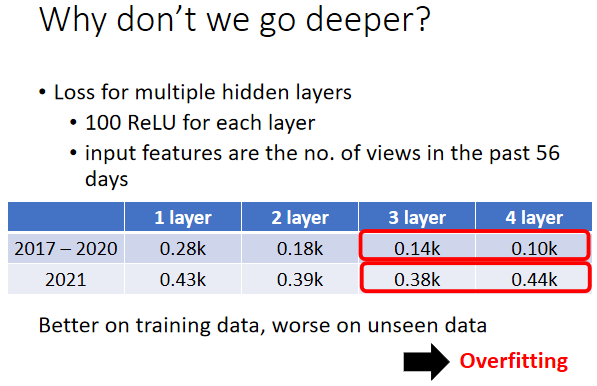
所以确实做得更深，做 4 层，4 层在训练资料上，它的 Loss 是 0.1k，在没有看过 2021 年的资料上是 0.44k，数据还下落了。在训练资料上，3 层比 4 层差，4 层比 3 层好，但是在没看过的资料上，4 层比较差，3 层比较好，在训练资料上跟没看过的资料上，结果是不一致的，这个状况叫做 Overfitting，机器学习会发生 Overfitting 的问题，指的就是在训练资料上有变好，但是在没看过的资料上没有变好这件事情。
但是做到目前为止，我们都还没有真的发挥这个模型的力量
我们真正要做的事情是预测未知的资料，怎么选模型，这个是下周会讲的问题
今天就讲了深度学习，那今天讲的不是一般的介绍方式，如果你想要听一般的介绍方式，过去的课程影片也是有的。深度学习的训练，会用到一个东西叫 Backpropagation，其实它就是比较有效率的算 Gradients 的方法，跟我们今天讲的东西没有什么不同，但如果你真的很想知道，Backpropagation 是什么的话，影片链接也附在这边。
- 第一节 2021-（上）-机器学习基本概念简介
- 2021-（下）-深度学习基本概念简介
- https://github.com/unclestrong/DeepLearning_LHY21_Notes/